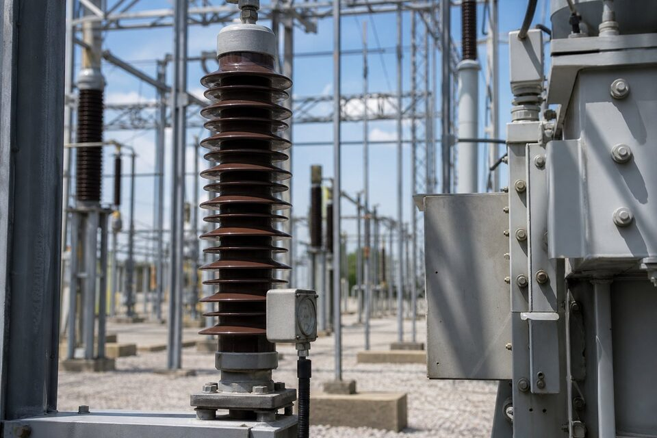

چرا برقگیر لازم است؟
شبکه برق به صورت مداوم در معرض دو دسته اضافه ولتاژ قرار دارد: اضافه ولتاژهای خارجی ناشی از برخورد مستقیم یا نزدیک صاعقه به خطوط، و اضافه ولتاژهای داخلی ناشی از کلیدزنی خازنها، ترانسفورماتورها و خطاها. این موجها که کسری از ثانیه طول میکشند اما دامنهای چند برابر ولتاژ نامی دارند، میتوانند عایق ترانسفورماتورها، کابلها و تجهیزات الکترونیکی را تخریب کنند. برقگیر در نقطه حساس نصب میشود و قبل از رسیدن موج به تجهیز حفاظتشده، آن را به زمین تخلیه میکند. هزینه یک برقگیر در برابر هزینه تعمیر ترانسفورماتور اصلی یا توقف تولید، از معدود اقلامی است که توجیه اقتصادی آن تقریبا همیشه برقرار است؛ به همین دلیل در تمام پستها و ورودیهای واحدهای صنعتی نصب میشود.

فناوری اکسید فلزی
نسل قدیمی برقگیرها از فاصلههای هوایی سری استفاده میکردند که در اضافه ولتاژ جرقه میزدند؛ این طراحی مشکلاتی مانند تاخیر در عمل و نیاز به قطع جریان دنبالرو داشت. فناوری غالب امروزی، برقگیر اکسید فلزی بدون فاصله است: ستونی از دیسکهای اکسید روی که مشخصه ولتاژ-جریان غیرخطی دارند. در ولتاژ عادی شبکه، این دیسکها تقریبا عایقاند و جریان ناچیزی عبور میکند؛ اما با افزایش ولتاژ از حد مشخص، به سرعت رسانا شده و جریان موج را به زمین هدایت میکنند و پس از عبور موج بلافاصله به حالت عایق بازمیگردند. پاسخ بسیار سریع، نبود جرقه و امکان پایش وضعیت از طریق جریان نشتی، این فناوری را به استاندارد صنعت تبدیل کرده است.
انواع برقگیر و جای نصب
- برقگیر فشار متوسط و قوی پستی: حفاظت ترانس اصلی، باس و تجهیزات گرانقیمت پست.
- برقگیر ورودی خط: در ابتدای خطوط هوایی برای کاهش دامنه موج ورودی.
- برقگیر پایه موتور و ترانس خشک: حفاظت عایق ماشینها در برابر موجهای کلیدزنی درایو.
- محافظ فشار ضعیف (SPD) نوع ۱ و ۲: در تابلو اصلی و تابلوهای فرعی برای موجهای باقیمانده.
- محافظ نوع ۳: حفاظت نقطهای تجهیزات حساس الکترونیکی در نزدیک مصرفکننده.
در واحدهای صنعتی، حفاظت کامل یک مفهوم چندلایه است: برقگیر فشار متوسط در پست ورودی، سپس (SPD) نوع ۲ در تابلو اصلی فشار ضعیف و در صورت وجود تجهیزات الکترونیکی حساس مانند درایوها و سیستمهای کنترل، حفاظت نقطهای نوع ۳. حذف هر لایه، ریسک را به لایه بعد منتقل میکند؛ بنابراین طراحی باید به صورت یک زنجیره هماهنگ دیده شود نه خرید چند قطعه مستقل.
معیارهای انتخاب
برای برقگیر فشار متوسط، ولتاژ نامی برقگیر باید متناسب ولتاژ شبکه و شرایط خطا انتخاب شود؛ انتخاب ولتاژ پایینتر از حد لازم، عمر برقگیر را به شدت کاهش میدهد چون در ولتاژ عادی نیز جریان نشتی بالایی خواهد داشت. سطح حفاظت برقگیر نیز باید پایینتر از سطح تحمل عایقی تجهیز حفاظتشده باشد تا موج قبل از آسیب رساندن محدود شود. کلاس تخلیه خط نیز مشخصکننده ظرفیت جذب انرژی در مواجهه با موجهای شدید است. در فشار ضعیف، انتخاب بین نوع ۱ برای محیطهایی با احتمال برخورد مستقیم، نوع ۲ برای تابلوهای اصلی و نوع ۳ برای حفاظت نهایی انجام میشود و هماهنگی انرژی بین این لایهها باید بررسی گردد.
نکات بهرهبرداری و استعلام
برقگیرها در عمل مصرفشدنی نیستند اما پایش میخواهند: در فشار متوسط، کنتور عمل و اندازهگیری جریان نشتی دورهای وضعیت سلامت را نشان میدهد و افزایش تدریجی جریان نشتی نشانه فرسودگی دیسکهاست. در (SPD) فشار ضعیف نیز نشانگر وضعیت و در مدلهای بهتر خروجی ریموت برای مانیتورینگ وجود دارد. برای استعلام، سطح ولتاژ، کاربرد، محل نصب و الزامات استاندارد پروژه را ذکر کنید و در پستها، مطالعه هماهنگی برقگیر را درخواست نمایید. در مناطق با آمار صاعقه بالا، سطح حفاظت سختگیرانهتری انتخاب شود.
پایش و آزمون دورهای برقگیرها
برقگیرها در شرایط عادی جریان بسیار کمی دارند، اما پایش همین جریان نشتی، ابزار اصلی تشخیص سلامت آنهاست. افزایش تدریجی جریان نشتی مقاومتی، نشانه فرسودگی دیسکها یا ورود رطوبت است و باید قبل از رسیدن به وضعیت بحرانی شناسایی شود. کنتور عمل نیز تعداد دفعات تخلیه امضای سنگین را ثبت میکند و افزایش ناگهانی آن میتواند نشانه صاعقههای شدید یا اضافه ولتاژهای مکرر شبکه باشد. در فشار ضعیف، محافظهای (SPD) معمولا نشانگر بصری وضعیت دارند و مدلهای پیشرفتهتر خروجی ریموت برای مانیتورینگ ارائه میدهند؛ در تابلوهای حساس، این خروجیها باید به سیستم هشدار متصل شوند تا پایان عمر محافظ بدون اطلاع باقی نماند.
جمعبندی
برقگیر، بیمه ارزان تجهیزات گرانقیمت برقی در برابر اضافه ولتاژ است. با انتخاب درست سطح ولتاژ و کلاس تخلیه، چیدمان چندلایه از پست تا تابلوهای نهایی و پایش دورهای وضعیت، ریسک خرابیهای ناگهانی ناشی از صاعقه و کلیدزنی به حداقل میرسد و تداوم تولید واحدهای صنعتی حفظ میشود.
سوالات رایج
برقگیر چه کاری انجام میدهد؟
مسیری با امپدانس کم برای تخلیه جریانهای گذرای ناشی از صاعقه یا کلیدزنی به زمین فراهم میکند و از رسیدن اضافه ولتاژ مخرب به تجهیزات حساس جلوگیری مینماید؛ پس از عبور موج، به حالت عایق بازمیگردد.
فناوری غالب برقگیرهای امروزی چیست؟
برقگیرهای اکسید فلزی بدون فاصله هوایی: ستونی از دیسکهای اکسید روی که رفتار غیراهمی دارند و در ولتاژهای بالاتر از حد مشخص به شدت رسانا میشوند؛ پاسخ سریع و بدون جرقه.
تفاوت برقگیر فشار قوی و (SPD) چیست؟
برقگیر فشار متوسط و قوی در پستها و ورودیهای شبکه نصب میشود و جریانهای بزرگ صاعقه را تخلیه میکند؛ (SPD) محافظ فشار ضعیفی است که در تابلوها برای حفاظت تجهیزات انتهایی در برابر موجهای باقیمانده و اضافه ولتاژهای داخلی به کار میرود.
برقگیر چگونه انتخاب میشود؟
بر اساس ولتاژ نامی شبکه، سطح حفاظت موردنیاز، کلاس تخلیه جریان، محل نصب و هماهنگی با سطح عایقی تجهیز حفاظتشده؛ در پستها مطالعه هماهنگی برقگیر انجام میشود.
مطالب مرتبط
با ذکر سطح ولتاژ و کاربرد، برقگیر فشار متوسط یا (SPD) متناسب از برندهای معتبر عرضه میشود.
مشاهده صفحه محصول ثبت RFQ همین محصولتامین این تجهیزات را به پیشرو تجهیز فرتاک بسپارید
شرکت پیشرو تجهیز فرتاک تامینکننده تخصصی تجهیزات صنعتی برای پروژههای نفت، گاز، پتروشیمی، فولاد و نیروگاهی است. برای دریافت پیشنهاد فنی و قیمت، استعلام (RFQ) خود را ثبت کنید تا کارشناسان مهندسی فروش در کوتاهترین زمان پاسخ دهند.
- تامین برق صنعتیتجهیزات تابلو و حفاظتی
- تامین تجهیزات صنایع نفت و گازپکیج مواد مطابق وندورلیست